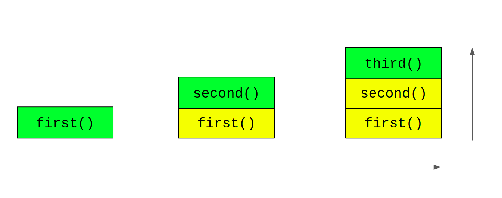
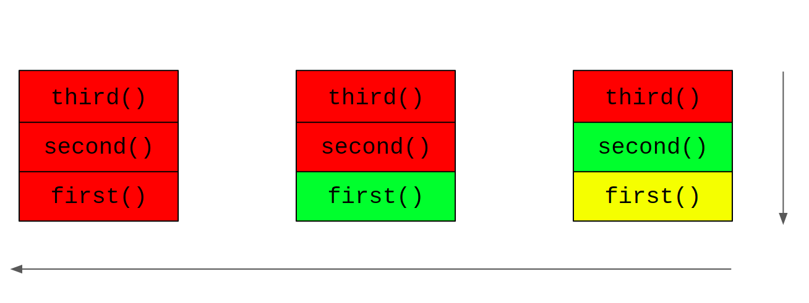

Lesson-4.4
Function calling Function
Consider the following program:
def first():
second()
print('first')
def second():
third()
print('second')
def third():
print('third')
first()When the code given above is executed, the output is as follows:
We have already seen that a function can be called from inside another function. In the code snippet given above, we have a slightly complex version. Let us try to understand this visually. This method of visualization is novel and is called the traffic-signal method. You will see why it has been christened this way.
Consider a simple function which doesn’t call any other function within its body. Most of the functions we have seen so far are like this. The call corresponding to this function could be in one of these two states: ongoing or completed.
- Ongoing if the control is inside the body of the function, executing one of its lines.
- Completed if all the lines in the body of the function have been executed and control has exited out of the function, either because a
returnstatement was encountered or because the control reached the last line in the function, in which caseNoneis returned by default.
A function which calls another function inside it could find itself in one of the three states: ongoing, suspended or completed. They are color coded as follows. Now you see why it is called the traffic-signal theory:

Ongoing and completed have the same meaning. To understand the suspended state, consider the following diagrams that correspond to the code given above:

Each column here is called a stack. They all represent the same stack at different instants of time, i.e., the columns here show the state of the stack at three different time instants. The horizontal arrow shows the passage of time. The vertical arrow indicates that each new function call gets added onto the top of the stack.

Re-introducing the code for reference:
def first():
second()
print('first')
def second():
third()
print('second')
def third():
print('third')
first()As third() doesn’t call any other function, it never enters the suspended state. Line-10 is the first print statement to be executed; this is why we see third as the first entry in the output. The job of the function third is done and it turns red. Now, the call transfers to the most recent suspended function - second. The execution of second resumes from the point where it got suspended; the print statement at line-7 is executed following which second turns red. Finally, control transfers to first, the print statement at line-3 is executed and first turns red.
Recursion
A recursive function is one which calls itself inside the body of the function. A typical example of recursion is the factorial function:
In the fact function given above, when the interpreter comes to line-4, it sees a recursive call to fact. In such a case, it suspends or temporarily halts the execution of fact(n) and starts executing fact(n - 1). Let us take a concrete example. This is what happens when fact(4) is called:
When fact(0) is called, there are no more recursive calls. This is because, the condition in line-2 evaluates to True and the value 1 is returned. This condition is called the base-case of the recursion. In the absence of a base-case, the recursion continues indefinitely and never terminates.
Once the base-case kicks in, fact(0) is done with its duty. So, the call transfers to the most recent suspended function. On the stack, we see that this is fact(1). fact(1) now becomes active. When it returns the value 1, its life comes to an end, so the control transfers to the most recent suspended function, which is fact(2). This goes on until we reach fact(4). When fact(4) returns the value 24, all calls have been completed and we are done!
Caution in Recursion
This section discusses some finer aspects of recursion.
Fibonacci series
Let us take another popular example, the Fibonacci series: \[ 1, 1, 2, 3, 5, 8, ... \] Each term in this series is obtained by summing the two terms immediately to its left. We can mathematically express this as follows. If \(x_1 = x_2 = 1\), then for all \(n > 2, n \in \mathbb{N}\), we have the following recurrence relation: \[ x_n = x_{n - 1} + x_{n - 2} \] We can now compute the \(n^{th}\) term of the Fibonacci series using a recursive function:
Now, try calling fibo(40). You will notice that it takes a very long time to compute the value. Why does this happen? This is because a lot of wasteful computation happens. Let us see why:

This is a different representation of the recursive computation and is called a recursion tree. Notice how some function calls appear multiple times. fibo(3) and fibo(1) are being computed twice, fibo(2) is being computed thrice. For a larger value of n such as 50, there would be even more wasteful computation.
Practically, how can we estimate the time that it takes for this program to run? One way would be to sit in front of the computer with a stopwatch in hand. But that is so un-Pythonic. Thankfully, the time library provides a good solution to this problem:
import time
def fibo(n):
if n == 1 or n == 2:
return 1
return fibo(n - 1) + fibo(n - 2)
start = time.time()
fibo(40)
end = time.time()
print(f'It took approximately {round(end - start)} seconds.')In a standard Python repl, it takes almost a minute! Coming back to the problem of Fibonacci series, we see that naive recursion doesn’t give us an efficient solution. We can instead look at the following iterative solution:
import time
def fibo(n):
if n == 1 or n == 2:
return 1
x_prev, x_curr = 1, 1
while n > 2:
x_prev, x_curr = x_curr, x_prev + x_curr
n -= 1
return x_curr
start = time.time()
fibo(40)
end = time.time()
print(f'It took approximately {round(end - start)} seconds.')Line-8 in the above code may be a little confusing. This is nothing but multiple assignment in the same line done simultaneously. The RHS of the assignment statement will be evaluated first, these two values will then be simultaneously assigned to their respective containers on the LHS. A better and more accurate explanation will be given in the next chapter when we discuss tuples.
Counting Function Calls
How do we compute the number of times a function is called? We can do this using a global variable:
def fact(n):
global count
count = count + 1
if n == 0:
return 1
return n * fact(n - 1)
count = 0
fact(4)
print(count)This is one of the potential uses of global variables.
Turtles all the way down
What happens if we have a recursive function without a base case? The simplest example of such a pathological function is:
When the above function is called with foo(), we get a RecursionError with the following message: maximum recursion depth exceeded. The limit is usually set to 1000 in most systems, i.e., If there are more than 1000 recursive calls, then that is going to result in this error. To verify what the limit is, you can run the following code: